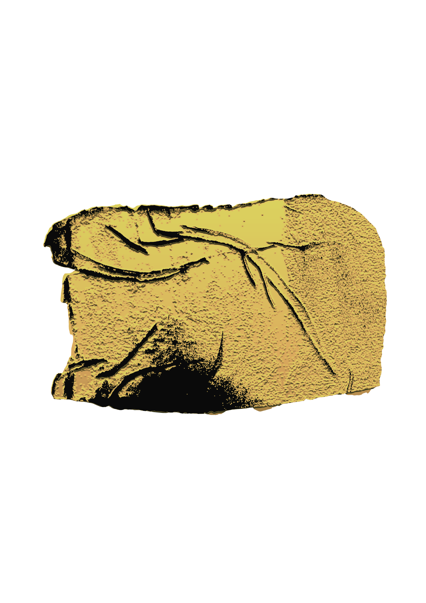

Pudesse eu não ter laços nem limites
Ó vida de mil faces transbordantes
Pra poder responder aos teus convites
Suspenso na surpresa dos instantes
A arte
Um instante no processo muda tudo
A arte é uma constante surpresa dos instantes. Os processos mudam de trilho, tipo quando a gente erra o caminho só para encontrar um liugar mais bonito, mesmo que a estrada até lá tenha sido escura. ou quando a gente abre uma placa de argila esoperando que ela fique lisinha mas as marcas do tecido se fixaram e agora você tem uma nova obra de arte.
